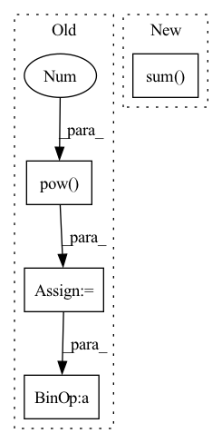

Pattern ID :2814

Before Change
if x.shape[0] != 3:
raise ValueError(f"Wrong dimensions of inputs, expeted 3 but input {x.shape}.")
out_1 = torch.matmul(x, self.V).pow(2).sum(1, keepdim=True) //S_1^2
out_2 = torch.matmul(x.pow(2), self.V.pow(2)).sum(1, keepdim=True) // S_2
out_inter = 0.5 *( out_1 - out_2)
out_lin = self.lin(x)
out = out_inter + out_lin
return out
After Change
if len(inputs.shape) != 3:
raise ValueError(f"Wrong dimensions of inputs, expected 3 but input {len(inputs.shape)}.")
fm_input = inputs
square_of_sum = torch.pow(torch.sum(fm_input, dim=1, keepdim=True), 2)
sum_of_square = torch.sum(fm_input * fm_input, dim=1, keepdim=True)
cross_term = square_of_sum - sum_of_square
cross_term = 0.5 * torch.sum(cross_term, dim=2, keepdim=False)
In pattern: SUPERPATTERN
Frequency: 3
Non-data size: 4
Instances
Fragment ID: 9307983
Project Name: jianzhnie/autotabular
Commit Name: ccbc29cc710d989909e09ae1fc5b67c0098c24aa
Time: 2021-05-13
Author: jianzhnie@126.com
File Name: autotabular/layers.py
M Class Name: FM
N Class Name: FM
M Method Name: forward(2)
N Method Name: forward(3)
M Parent Class: nn.Module
N Parent Class: nn.Module
M File Name: autotabular/layers.py
N File Name: autotabular/layers.py
M Start Line: 13
M End Line: 21
N Start Line: 34
N End Line: 40
'>
Before Change
smooth = 1
// dice系数的定义
dice0 = 2 * (pred[:,0] * target[:,0]).sum(dim=1).sum(dim=1).sum(dim=1) / (pred[:,0].pow(2).sum(dim=1).sum(dim=1).sum(dim=1) +
target[:,0].pow(2).sum(dim=1).sum(dim=1).sum(dim=1) + smooth)
dice1 = 2 * (pred[:,1] * target[:,1]).sum(dim=1).sum(dim=1).sum(dim=1) / (pred[:,1].pow(2).sum(dim=1).sum(dim=1).sum(dim=1) +
target[:,1].pow(2).sum(dim=1).sum(dim=1).sum(dim=1) + smooth)
dice = (dice1+dice0) / 2.0
// 返回的是dice距离
return torch.clamp((1 - dice).mean(), 0, 1)
After Change
smooth = 1
// dice系数的定义
dice = 2 * (pred * target).sum(dim=1).sum(dim=1).sum(dim=1) / (pred.pow(2).sum(dim=1).sum(dim=1).sum(dim=1) +
target.pow(2).sum(dim=1).sum(dim=1).sum(dim=1) + smooth)
// 返回的是dice距离
'>
Fragment ID: 9307882
Project Name: lee-zq/3dunet-pytorch
Commit Name: 5503c174b8875343fe4812ebb0dcbe77346a348a
Time: 2021-05-21
Author: zq_lee@163.com
File Name: loss/Dice.py
M Class Name: DiceLoss
N Class Name: DiceLoss
M Method Name: forward(3)
N Method Name: forward(3)
M Parent Class: nn.Module
N Parent Class: nn.Module
M File Name: loss/Dice.py
N File Name: loss/Dice.py
M Start Line: 19
M End Line: 26
N Start Line: 17
N End Line: 23
'>
Before Change
// weight (ray_num, point_num)
def forward(self, weight:torch.Tensor, d_norm: torch.Tensor, p_norm: torch.Tensor) -> torch.Tensor:
norm_diff = torch.pow((d_norm - p_norm), 2)
res = torch.sum(weight.unsqueeze(-1) * norm_diff)
return res / weight.numel() if self.size_average == True else res
class BackFaceLoss(nn.Module):
def __init__(self):
After Change
def forward(self, weight:torch.Tensor, d_norm: torch.Tensor, p_norm: torch.Tensor) -> torch.Tensor:
dot_diff = 1. - torch.sum(d_norm * p_norm, dim = -1)
// norm_diff = torch.pow((d_norm - p_norm), 2)
return torch.mean(weight * dot_diff) if self.size_average == True else torch.sum(weight * dot_diff)
class BackFaceLoss(nn.Module):
def __init__(self):
super().__init__()
'>
Fragment ID: 9307895
Project Name: enigmatisms/nerf
Commit Name: abd69721dbe663af1bb8a496168c0d5624054ca5
Time: 2022-08-16
Author: 984041003@qq.com
File Name: py/ref_model.py
M Class Name: WeightedNormalLoss
N Class Name: WeightedNormalLoss
M Method Name: forward(4)
N Method Name: forward(4)
M Parent Class: nn.Module
N Parent Class: nn.Module
M File Name: py/ref_model.py
N File Name: py/ref_model.py
M Start Line: 114
M End Line: 116
N Start Line: 114
N End Line: 116